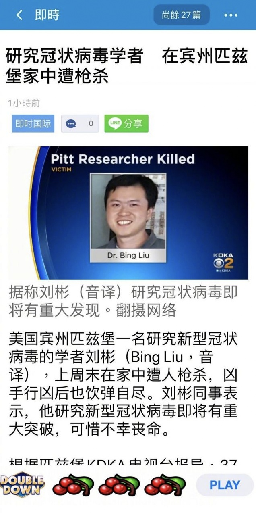

缘起

后面的评论不备份了，不外乎不惮以最大的恶意揣测「上不得台面的阴招小动作层出不穷」，若是在其它充沛着老一辈无产阶级程序员并且没有党性坚定的老审查员的宣传阵地当中，还会曰若稽古回顾当年百善の新世界美帝灯塔国情报工学业界的撕哔盛况。
简单说，在《异闻录》〔048〕汉江与韩流与后浪与棒当中已经引用过素材化用为正文了，百善の新世界美帝灯塔国潘家园共荣圈皮中堂堡死了个唤作「必应」的虽远必诛の强汉之龙裔①，文中角色「郭春海」没有发表任何评论。就事论事，这位龙裔の专业是生化医药，不是情报工学，说被「竞争对手」盯上不太贴切。但是了不起的盖茨比尔对疫苗的热衷，也是众所周知，勉强可以扯上关系。没有确凿证据的情况下，大开脑洞还是放在架空当中比较合适。
而万恶的旧大陆我中华兲嘲上国境内九点四亿傻哔曾经在繁荣的简体中文互联网上热烈讨论过「商界精英」的实际表现与各种文艺作品之间的差异，用于举例的就是「游族网络大掌柜林奇遭毒毙」并定性为「涉黑涉恶」。其它社会新闻当中也有相关内容，甚至还有与「竞争对手」毫无关系就是因为户口本爹娘在代理注册帐号时选用字符大吉大利，于是被当作「杀鸡儆猴」的道具，炮制刑事案件之后报道「真・新闻」并运用情报工学手段推送到「竞争对手」眼皮底下「以示警告」。通常评论为「哪朝哪代没有冤死鬼」，并在遭遇党性坚定的老审查员警告「莫谈国事」之后以「对比之下，当今圣天子在位，河清海晏歌舞升平真乃盛世景象」补充回复，以实践「大喘气」「三句半」之类神转折骚操作文艺理论。
亲耳所闻
长话短说，前一阵在出门酗酒的时候，亲耳听见店老板评论员工。说有个应聘的厨子口若悬河吹得天花乱坠，指天发誓拍胸脯保证工艺精湛品质优良，但，需要高标准严要求的设备与耗材，老板划拨预算大肆采购之后，实践效果客气的说「不尽如人意」，然后「连个招呼都不打就连夜跑路」，还说有个已经上岗的厨子工艺不甚精湛品质不甚优良，经由会社出资培训之后有所提高，然后「连个招呼都不打就连夜跑路」。不过呢，没有听到「卷款」「砸锅」相关字眼，可见仅仅是「跑路」而已，顶多有「民事纠纷」，不至于形成「刑事案件」。
若是套用到情报工学领域，就是曾经在繁荣的简体中文互联网上流行的培训教材《二十一天精通谁啥哪咋，从砸锅删库到跑路》，相关社会新闻也有报道，此处不做备份。
亲眼所见
前情提要见《“活人还能被尿憋死不成？”》，这是本人亲身经历，但是没有在繁荣的互联网上搜索到任何关于开源字体设计软件「FontForge」存在相关缺陷的报道，而之前的实践证明功能「本来」一切正常。
于是这些线索就联系起来了也。通过查询关键字「字体设计软件都有个啥吖」，兲嘲特色大手搜索引擎提供的高赞回答通常是「Adobe Illustrator」「CorelDRAW」，不排除相关大手情报工学会社宣传部干事爱岗敬业，此处不做备份。而国际一流和谐宜居之都「高学历精英社交圈」也出现了相关大手情报工学会社宣传部干事的活动痕迹：
而境外大手搜索引擎甲由于众所周知的原因「自古以来不存在」，境外大手搜索引擎乙提供的相关情报是这样的：
其中排名前列的条目中，出现了境内大手搜索引擎提供的宣传部干事甚为活跃的大手情报工学会社甲，没有出现宣传部干事比较活跃的大手情报工学会社乙。与此同时，其它情报还显示，大手情报工学会社甲、乙制造的子丑寅卯等产品，均非用于「字体设计」专门目的。
无论如何，这总是一条线索。于是运用境内大手搜索引擎查询可以将繁荣的简体中文互联网渗透得如同筛子一般并在其所依赖的通讯网络当中如入无人之境还能派遣特种工作人员肉身潜入夜不闭户路不拾遗十步一岗五步一哨的兲子脚下首善之区国际一流和谐宜居之都的相关内容：

如图所示，大手情报工学会社甲、乙的活跃程度截然不同，虽然两家会社注册地点同属「百善の新世界」，但是甲托庇于美帝灯塔国，而乙则不是。
后记
孤证不立，截至目前的情报，仅有我本人这里出现异常现象，并未证实大手情报工学会社某，已经广泛展开对以「FontForge」为首的衬托出采购自家产品的相关会社所聘用员工素质有待充沛而影响以供应商身份出现的该社之「商誉」的赛博朋克英特纳雄耐尔主义者的全方位24×7无死角的硅基甚至碳基军事打击。
- ①